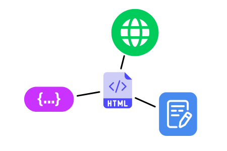
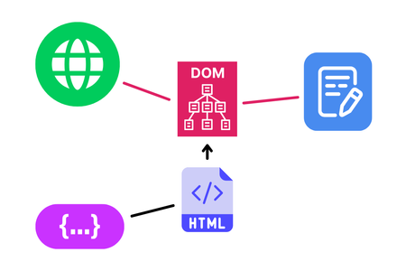
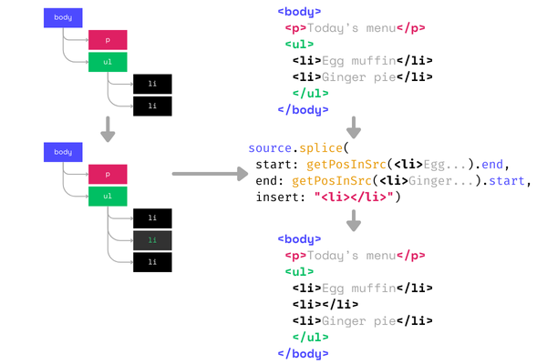

This website is editable!
If you add ?edit to any URL on this site, it activates edit mode. In this mode, you can edit text and apply basic formatting to any element.
Of course, you won’t be able to save changes without having write access to my files, but I can. Using the Web File System API, it can update my local copy of the website’s source code.
In short, I can edit my site via my site. In fact, this article was written this way!
It’s still rough in some cases, but the solution is usable.
But why?
As usual, I made this mainly for fun. But having a WYSIWYG (what-you-see-is-what-you-get) editor for my posts has been a long time goal ever since I rewrote my site in vanilla HTML.
After I moved away from a static site generator, the need for an extra transformational build step disappeared, allowing the raw HTML source to be directly served in the client. This unlocked a path to source editing in the client! As well as other basic things for free.
The HTML file can now act as the editing platform, in addition to being the coding and authoring medium, and of course, the publishing medium.

We're sticking with standards with this one. I’ve noticed that this has been the tendency of my personal use of Web tech.
| Instead of…
| I use
|
| CMS
| the file system
|
| frontmatter
| read data already in the markup,
<meta>, <title>, <time>, <tag-chip>s
|
| WYSIWYG editor
| editable HTML page
|
| Advanced editor (?)
| text editor (edit HTML code)
|
| Widgets (??)
| JavaScript
|
Anyway, these things don’t really impact visitors and readers of this site. It’s more about my writing and authoring experience. Thoughts can now go directly into the page the way it’s gonna be read.
I already felt a bit of that improved flow when I removed the build step and added a live reload script, minimising the development feedback loop. With direct editing, feedback loop is instant — no more switching between the text editor and the browser! It’s been extremely valuable during the proofreading and editing phase.
Content, editable
Browsers support editing HTML natively via the contenteditable attribute. Set this attribute on any element and it becomes editable. It’s a barebones way to get a WYSIWYG editor in HTML. This is what I’m using as of time of writing.
contenteditable formatting options are limited though, and browser implementations vary. Not a problem for now.
Whether contenteditable was good or terrible was a minor detail in the bigger picture. The real problem was the Document Object Model…
DOM vs source
When I said no build step I kinda lied. You see, there's still an inherent compilation step that happens inside the browser. This step is the parsing of HTML into the Document Object Model, or the DOM. The “DOM” essentially are the elements that you actually interact with on a webpage.
Technically, the DOM is the interface to the elements themselves. For general purposes, the interface is the abstraction.
The contenteditable editor edits the DOM, not the HTML source code itself. I needed to somehow save the corresponding DOM edits into the source. It was not very straightforward.

HTML to DOM conversion is one way. DOM to source HTML would be another thing. And no, innerHTML/outerHTML is not the exact inverse operation.
For example, simply saving html.outerHTML to a file won’t work, because outerHTML (or any DOM introspection method, for that matter) takes a snapshot of the current state of the DOM, including dynamically rendered elements. This would break interactive elements and custom elements in the source, as the rendered elements would incorrectly overwrite the original markup.
Saving the generated outerHTML directly would also mess up any manual formatting that I make in the source code, collapsing whitespaces and forcing HTML entities. (I don’t use Prettier; it produces invalid HTML)
Solution: source patching
So I made an algorithm to patch the source according to changes made in the DOM. What it does is listen for changes in the DOM tree, and tries to identify the ‘smallest’ textual patch needed to update the source.
It starts with the MutationObserver API. MutationObserver lets the code respond to changes in the DOM. For each change, the API provides the relevant node(s), as well as the two surrounding unchanged siblings.
Btw, the MutationObserver API has been somewhat unwieldy.
It only provides coarse details about each change, not like a detailed diff. Also, a single user interaction (say, pressing the Enter key) could cause multiple mutations to fire (the Enter key causes a <p> to be inserted, then a <br> inside the p). Some mutations also end up cancelling each other in the same callback or across multiple callbacks (e.g. span that is added and removed immediately). The exact order and amount of effects also vary by browser.
My workaround was to collapse multiple mutations into one logical change per resulting subtree.
The idea is to update the relevant part of the source without changing the rest. To do this, it finds two anchor points around the mutation. These two points must remain stable throughout the mutation in both DOM and source. Only the content between them are replaced.
So for each change, the steps are:
- Find the unchanged element before the change.
- Find the unchanged element after the change.
- Use their positions in source as boundaries.
- Splice the source between the two boundaries with the updated HTML.

Then there’s the subproblem of mapping the position of the boundary elements in the source code. Extracting the position of any given DOM element in the source code is a bit more involved:
- Get the element’s ‘address’, or its path in the DOM (unique steps from the root to the element).
- Scan the source HTML, tag by tag, keeping track of your current ‘address’ by identifying opening and closing tags.
- Compare the current tag’s path-in-source against the element’s path-in-DOM.
- If paths match, then the current tag corresponds to the element!
getPositionInSource pseudocode
/** Gets the position of the given Element in the source code */
getPositionInSource(element: Element, source: string) {
// Get the DOM path of the target
domPath: Element = [];
while (element) {
domPath.unshift(element);
element = element.parentElement;
}
let startIndex, endIndex;
sourcePath = [];
// match all HTML tags
for (tag of source.matchAll(/<\/?[a-z0-9-]+/gi)) {
// Note: does not handle void elements and optional end tags
if (isOpenTag(tag)) {
sourcePath.push(tag);
if (matchPath(domPath, sourcePath)) {
// Source path and DOM path matches!
// This is the target element's opening tag
startIndex = tag.index;
}
} else { // is a closing tag
if (matchPath(domPath, sourcePath)) {
// Source path and DOM path matches!
// This is the target element's closing tag
endIndex = source.indexOf(">", tag.index);
return { startIndex, endIndex };
}
sourcePath.pop();
}
}
}
Handling void elements (e.g. <input>) and optional end tags (e.g. <li>s with no end tags) require a bit more logic to keep the current path accurate, but the main idea remains the same.
The main algorithm can be described as basically a contextual find-and-replace. Instead of searching for the text to be replaced, it finds the surrounding text and replaces the content in the middle.
This preserves the source code’s original formatting and avoids overwriting dynamic elements! Yay!
There’s still a lot of room for improvement. My current issue is that it’s converting nearby HTML entities to rendered versions (e.g. '…' to '…'). I think I’d need to implement a more fine-grained editing within an individual text node to solve that.
There are probably a bunch more edges cases that I haven’t discovered, but hey it works well enough to write the text you’re reading!
You can check out the code for the edit mode for more details! Note: This script was made specifically for myself and my site.
Thoughts
The algorithm doesn’t have to be perfect; I can always fall back to editing the source if certain things don’t work. A good thing about this is that I can switch to either method any time because in the end I'm working on the same HTML file.
When I first imagined this solution, I thought I would only be using it to do the final edits just before publishing a post, but here I am actually writing a whole post.
I can now imagine a workflow where I write the main text in the browser, then go into the HTML to insert media, mark up code blocks, custom elements, and other formatting. And of course, I’d use a code editor to code the interactive sections that I enjoy adding to my posts.
In the future, think I’d like to add more formatting options and UI for inserting code blocks, media, lists, headings, etc. Maybe use Quill or something?
The top thing I would love to have is inserting hyperlinks. During final passes on a post, I like to sprinkle hyperlinks on interesting terms, even if just to link the Wikipedia entry.
I’ll post about any improvements I make along the way. This could be a series! I mean, it already kind of is:
- Rewriting my site in vanilla web
- Simple live reload for developing static sites
- 📍(this post)
- [future formatting feature?]
- [edit CSS? JS?]